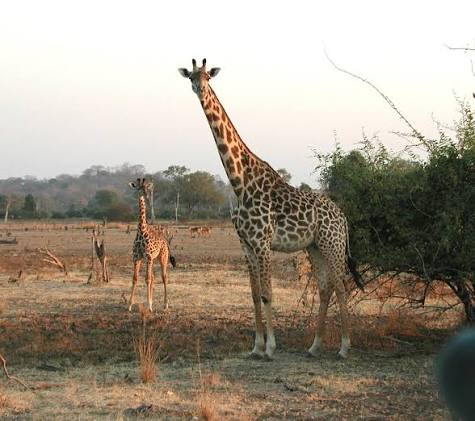
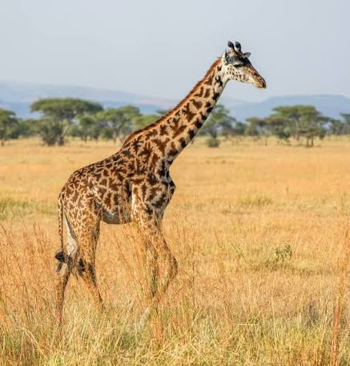

Giraffen
Die Giraffen (Giraffa) sind eine Gattung der Säugetiere aus der Ordnung der Paarhufer. Ursprünglich wurde ihr mit Giraffa camelopardalis und der Trivialbezeichnung „Giraffe“ nur eine einzige Art zugewiesen. Molekulargenetische Untersuchungen aus dem Jahr 2016 zeigen jedoch, dass die Gattung wenigstens vier Arten mit sieben eigenständigen Populationen umfasst. Die Giraffen stellen die höchsten landlebenden Tiere der Welt. Zur Unterscheidung vom verwandten Okapi (sogenannte „Waldgiraffe“) werden sie auch als Steppengiraffen bezeichnet.
Arten von Giraffen
Eine im Jahr 2016 vorgelegte DNA-Studie eines Forscherteams um Julian Fennessy und Axel Janke basierend auf 190 Individuen von insgesamt neun anerkannten Unterarten, darunter auch erstmals solche der Nubischen Giraffe (G. c. camelopardalis) stellt die bisher umfangreichste genetische Analyse dar. Demzufolge ist die Gattung der Giraffen in folgende Arten und Unterarten aufzugliedern:

- Nord-Giraffen
- Süd-Giraffen
- Netzgiraffen
- Massai-Giraffen
